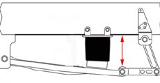
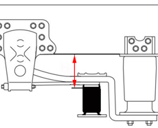

Note:
Calibration of the level sensor should be performed when:
Any of the level sensors has been changed.
Work has been performed on the level sensor.
The control unit has been changed.
Test prerequisites:
The parking brake must be released.
The pressure in the primary tank is OK.
The operating button on the control box must be in position "MAN1".
The wheels must be blocked.
The vehicle must be unloaded.
Ensure that no person is under the vehicle.
Check that control rods are secured between the level sensors and axles.
Note: During calibration the vehicle will be raised quickly to check that the level sensors have got the correct polarities.
Adjust any fault codes.
Procedure:
Make sure that the vehicle is not loaded.
Applies to all trucks with bogies.
Put the bogie switch in position 2, centre position.
Block the wheels and release the parking brake.
Start the engine and fill the system up with compressed air until the compressor releases pressure.
Raise the vehicle with the vehicle´s control box.
Position spacers according to the pictures below.
Front axle
210mm

Drive axle
Type of rear axle
GVW 12000, 14000, 16000 RSS 1125A, PONTS MS 11145 11T=150mm
GVW 12000, 14000, 16000 RSS 1132A, PONTS MS 11150 11T=162mm
GVW 18000 RSS 1132A, PONTS MS 11145 11T=125mm

Note: Always place the spacers on both the front axle and the drive axle, irrespective of which level sensor that has been replaced.
Lower the vehicle onto the spacers with the control box, without draining the air bellows.
The calibration should be performed with the control box operating button in the upper position, "MAN1".
Choose function and perform the calibration.
End the diagnosis and remove the spacers.
Note: During calibration the vehicle will be raised quickly to check that the level sensors have got the correct polarities.